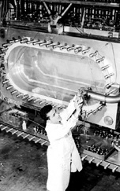

Bubble chambers were an important kind of particle detector from 1953 well into the 1970s. The idea behind a bubble chamber is that when you shoot charged particles into a superheated liquid, the particles will leave behind a track of bubbles. This makes it easy to track the particles and figure out important things like their charge and mass.
(A superheated liquid is made by lowering the pressure in the chamber when the liquid is just below the boiling point.)